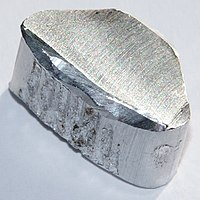

Numero atomico: 13
Massa atomica: 26,98
Temperatura di fusione (°C): 660
Temperatura di ebolizione (°C): 2519
Energia di prima ionizzazione (kj/mol): 578
Elettronegatività (secondo Pauling): 1,61
Densità: 2,70
Numeri di ossidazione: +3
Configurazione elettronica: 1s2, 2s2, 2p6, 3s2, 3p1
Maggiori Informazioni